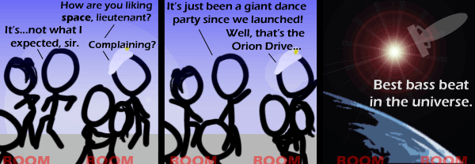

Comic JK 515
When I Feel Like It
⇤
<
?
>
⇥

⇤
<
?
>
⇥
Forum
.
RSS
.
Digg
.
Facebook
.
Reddit
.
Twitter
.
Stumbleupon
Seriously, what the hell is this shit? My spaceship is propelled by your mother's farts. Enter your thoughts on #515 here. Please, no spamming, trolling, or tailgating. I don’t get the pun. What is “bass beat” supposed to sound similar to? BSBT? Baspeat? >Pun? Why do you think it's a pun? >>If it’s not a pun, then what’s the joke? >>>Nuclear explosions are well known for their incredible bass. It seems to me that some sort of nuclear based propulsion would be an effective means of reducing the cost-prohibitiveness of space travel. All the sci-fi greats of the first 2/3s of the 20th century predicted nuclear power would take us through the solar system by now, and yet we stick to predominantly to chemical means of propulsion. Think about it! Thermonuclear rockets would allow a small craft to launch from earth size planets without nearly as much infrastructure in place - a necessity on an undeveloped world lacking Saturn V factories. Simply fill up your propellant tank with liquid hydrogen/water/highly compressed atmospheric gasses, heat it up to hundreds or thousands of degrees with an extremely hot nuclear reactor and you've got plenty of thrust without having to cart around the less energy dense chemical reactants. And once in space and far enough from populated worlds, then you could fire up the orion drive for even faster space traveling goodness. I suppose you would have the potential for a thermonuclear launch vehicle to lose containment/go critical, which if used on populated worlds would not be much appreciated by the inhabitants. >[what was here? could somebody replace it?] >>It was also a rather intelligent discussion on propulsion. That said, for things like probes or if fuel efficiency is more important than getting there quickly, an ion drive would work well. Especially if powered by a nuclear reactor or something. You wouldn't need to bring much fuel along since you can collect it as you go. >>>And with sufficient computing power you can make even a little bit of fuel go a long way when touring the solar system (consider the ICE mission: a few dregs of manoeuvring propellant in a repurposed satellite and a _very_ elaborate flight plan led to a comet flyby). >>>>The biggest problem with nuclear propulsion concepts is the cold war based fear of nuclear technology. People are afraid of Chernobyl happening, hence there aren't as many nuclear reactors as there should be - coupled with the legitimate concerns of Uranium supply and waste disposal, it's difficult to get them approved, at least in North America. The threat with launching nuclear material into space is more a magnitude concern than one of probability - the fallout of a nuclear reactor being blown up after being propelled several miles into the air would be huge, even if it wasn't on at the time. If we ever get to the point where it's reasonable to launch radioactive material into space in large quantities, we solve a lot of our nuclear power issues very quickly. Any nuclear waste we need to get rid of can be shot into the sun. Nuclear disarmament? Dump the warheads into the sun. >Well there is also the problem of coming to a stop. Do we turn the ship 180° and fire the Orion drive at the planet we are visiting? O_o >> The only problem we have to face THEN is resource depletion, right? >>Stopping isn't hard, you just have to plan a tangential route, which is what you need anyway to have a do anyway to end up not ramming the planet. Spend half the trip accelerating, and then flip around, and the other half decelerating, and use conventional engines to travel from far orbit in. Or stop accelerating for a period in the middle if you get to the point where you can't keep accelerating. >>> As nuclear driven spaceships don't need explosive materials to launch, the risk of a fallout should be very low. You just need some container for all radioactive materials used and a method to land that thing without breaking it. >>>> You mean they should go back and pick up their reaction mass? >>>>> This is a disarmingly intellectual conversation >>>>>> c How about only using the reactor to heat a propellant, basically boiling off some relatively harmless solid or liquid? I seem to remember something about spent fuel rods heating to thousands of degrees if not properly cooled - if that heat could be harnessed to create steam, which could then be put through a rocnket nozzle... I may need to actually do some math on that. -vc nihhrt nigger nigger